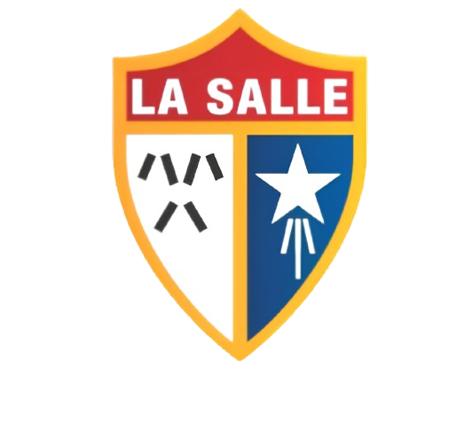

O Colégio Estadual La Salle é uma instituição de ensino que carrega consigo uma tradição de excelência acadêmica e valores fundamentais há muitas décadas. Este colégio tem sido um farol de educação e desenvolvimento para gerações de estudantes. Fundado com a visão de proporcionar uma educação de qualidade acessível a todos, o Colégio Estadual La Salle se destaca por sua abordagem inclusiva e por promover um ambiente de aprendizado enriquecedor. Desde o maternal até o ensino médio, o colégio oferece uma gama diversificada de disciplinas e atividades extracurriculares, atendendo às necessidades e interesses variados dos alunos. Uma das características distintivas do Colégio Estadual La Salle é o seu corpo docente altamente qualificado e dedicado. Os professores não só dominam suas áreas de ensino, mas também estão comprometidos em orientar e inspirar os alunos em seu percurso educacional. A abordagem pedagógica do colégio valoriza não apenas o conhecimento acadêmico, mas também o desenvolvimento pessoal e social dos estudantes. Além do foco no currículo acadêmico, o Colégio Estadual La Salle promove uma variedade de atividades extracurriculares que enriquecem a experiência estudantil. Desde clubes e grupos de interesse até competições esportivas e artísticas, os alunos têm a oportunidade de explorar seus talentos e interesses fora da sala de aula, desenvolvendo habilidades de liderança, trabalho em equipe e criatividade. Outro aspecto notável do Colégio Estadual La Salle é o seu compromisso com a comunidade. Por meio de iniciativas de responsabilidade social e projetos de serviço comunitário, os alunos aprendem a importância de serem cidadãos ativos e responsáveis, contribuindo para o bem-estar da sociedade em que vivem.

Missão e Visão: A missão do Colégio La Salle Pinheirinho é proporcionar uma educação de qualidade, que integre o desenvolvimento acadêmico com a formação ética, moral e religiosa dos alunos. A visão da instituição é formar cidadãos críticos, responsáveis e comprometidos com a construção de uma sociedade mais justa e solidária.
Estrutura e Cursos Oferecidos O colégio oferece uma infraestrutura moderna e adequada para o desenvolvimento de diversas atividades pedagógicas, culturais e esportivas. Entre os níveis de ensino oferecidos, estão:
Projetos e Atividades Extracurriculares O Colégio La Salle Pinheirinho promove uma série de projetos e atividades extracurriculares,como:
Valores Lassalistas Os valores lassalistas que orientam a atuação do Colégio La Salle Pinheirinho incluem: